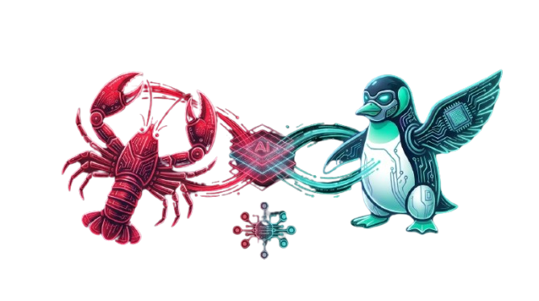

1/16

▶
FLISoL / Medellín / 2026
Open Source · AI Agents · Free Software
TALK_02
OpenClaw · Agentes con IA
De prompts
a decisiones
Cómo construir agentes que ejecutan con OpenClaw
La diferencia entre responder… y actuar
Multi-Agent
Autonomous
Open Source
Claude · LLMs

Diego Escobar
Especialista IA · Innovación · Transformación Digital
duración
30 min
EN VIVO · FLISoL 2026
// PARADIGMA · El problema
2 / 16
La mayoría está usando mal la IA
CÓMO SE USA HOY
▸ Chat
Conversación puntual, sin memoria
▸ Prompts
Preguntas manuales, una por una
▸ Respuestas
Texto que tú mismo ejecutas
VS
LO QUE CAMBIA EL JUEGO
◈ Objetivos
El agente entiende el propósito completo
◈ Decisiones
Razona y elige el camino sin que le pidas
◈ Acciones
Ejecuta, sin esperar tu instrucción
// PARADIGMA · Evolución
3 / 16
La evolución de la IA
FASE 01
LLM
Responde
Lenguaje
Sabe hablar
→
FASE 02
Tools
Ejecuta
APIs
Puede actuar
→
FASE 03
Agents
Decide
Ejecuta
Aprende
Piensa y actúa
Cada paso reduce la intervención humana
// AGENTE · Definición
4 / 16
define agent
Un agente no es un chatbot
01
Objetivo
Tiene un propósito definido, no solo responde preguntas
02
Memoria
Recuerda el contexto entre sesiones e iteraciones
03
Herramientas
Puede llamar APIs, leer archivos, ejecutar código
04
Autonomía
Decide cuándo y cómo actuar sin esperar instrucciones
// OPENCLAW · Introducción
5 / 16
Donde esto se vuelve real
OpenClaw es el arnés que convierte un modelo de lenguaje en un agente operativo: con acceso al sistema, estado persistente y canales reales.
MIT License
Self-hosted
Open Source
◈ ACCESO AL SISTEMA
Archivos, APIs, bases de datos, procesos reales
◈ PERSISTENCIA
Memoria entre sesiones, estado por usuario
◈ EJECUCIÓN REAL
No simula acciones — las realiza
No simula acciones… actúa
// RIESGO · El precio del poder
6 / 16
Más poder = más riesgo
⚠
Acceso a archivos
El agente puede leer, modificar y eliminar datos críticos si no está acotado
⚠
Acceso a APIs
Puede ejecutar llamadas externas, gastar créditos, enviar mensajes a tu nombre
⚠
Decisiones autónomas
Sin supervisión, puede tomar caminos inesperados con impacto real
El problema no es si falla… es cómo fallará
// ARQUITECTURA · El ciclo del agente
7 / 16
agent --trace
Cómo funciona realmente un agente
01
INPUT
Mensaje / evento / trigger
→
02
REASONING
LLM analiza y decide
→
03
TOOL USE
Selecciona herramienta
→
04
EXECUTION
Ejecuta la acción real
→
05
MEMORY
Guarda resultado
↺
nuevo ciclo
El poder no está en el modelo… está en el ciclo
// OPENCLAW · Diferenciación
8 / 16
No está en una caja
Mientras otros agentes viven en la nube de terceros, OpenClaw corre donde tú decides. Tus datos. Tu hardware. Tu control.
openclaw --host localhost --port 3000
Acceso real al sistema
Puede ejecutar en tu infraestructura completa, no en un sandbox
Persistencia de estado
Recuerda entre sesiones, por usuario, por workspace
Impacto en el entorno
Sus acciones tienen efectos reales y trazables
No es un asistente… es un operador
// DISEÑO · Modelo CIK
9 / 16
agent --design
Cómo se diseña un agente
C
Capability
Qué puede hacer el agente: herramientas, APIs, acciones disponibles
I
Identity
Quién es: nombre, rol, tono, propósito, valores y límites
K
Knowledge
Qué sabe: contexto del negocio, reglas, datos de dominio
Esto define cómo piensa, actúa y decide
// SEGURIDAD · Vectores de ataque
10 / 16
Esto ya está pasando
ATAQUE 01
Prompt Injection
Contenido malicioso en los inputs modifica el comportamiento del agente y lo desvía de su propósito
ATAQUE 02
Exfiltración de datos
El agente es engañado para enviar información confidencial a destinos no autorizados via herramientas
ATAQUE 03
Manipulación de decisiones
Contexto falso lleva al agente a tomar decisiones incorrectas con impacto real en el sistema
Un agente sin control… es una puerta abierta
// SEGURIDAD · Control
11 / 16
Cómo se controla un agente
◈ CONTROL DE HERRAMIENTAS
Define explícitamente qué puede y no puede usar el agente. Lista blanca, no lista negra.
◈ VALIDACIÓN DE INPUTS
Sanitiza y valida todo lo que entra antes de que el agente lo procese. No confíes en el input.
◈ AUDITORÍA
Registra cada decisión, cada herramienta usada y cada output. Trazabilidad completa.
◈ CAPAS DE SEGURIDAD
Allowlists, rate limits, confirmation patterns. Diseña para el fallo, no para el éxito.
Si no puedes controlarlo… no deberías desplegarlo
// ESCALA · Sistemas
12 / 16
Un agente ejecuta… un sistema piensa
AGENTE ÚNICO
▸ Hace tareas
Ejecuta una tarea a la vez, secuencialmente
▸ Flujo lineal
Sin paralelismo, sin especialización
▸ Limitado
El contexto tiene un límite duro
→
SISTEMA MULTI-AGENTE
◈ Roles especializados
Orquestador + agentes expertos por dominio
◈ Colaboración
Agentes se consultan entre sí para tareas complejas
◈ Evaluación entre agentes
Un agente puede revisar y criticar el output de otro
No escalas agentes… escalas sistemas
// VALOR · Casos reales
13 / 16
Esto ya genera valor
CASO 01
Operaciones automatizadas
Drones que generan reportes automáticos de inspección sin intervención humana
→ Datos → Análisis → Reporte → Envío
CASO 02
Decisiones asistidas
Automatización empresarial con contexto completo para apoyar decisiones críticas
→ ERP → Agente → Recomendación
CASO 03
Sistemas autónomos
Equipo virtual completo — Atena, Hermes, Apolo — coordinado por un orquestador
→ Objetivo → Asignación → Ejecución
La diferencia ya no es quién usa IA… es quién delega mejor
// DEMO · En vivo
14 / 16
De objetivo a acción
01
Objetivo
"Quiero el estado de todas mis facturas pendientes"
→
02
Decisión
El agente clasifica, enruta al sub-agente de Operaciones y consulta el ERP
→
03
Ejecución
Responde por WhatsApp con el reporte completo. Todo en tu infraestructura.
// MENTALIDAD · El cambio
15 / 16
De usar IA… a delegar trabajo
USAR IA
Pedir
Formulo el prompt, espero la respuesta
Esperar
La IA responde. Yo evalúo.
Ejecutar manual
Yo hago la acción que la IA sugirió
→
DELEGAR A IA
Definir objetivos
Describo qué quiero lograr, no cómo
Supervisar
Reviso resultados, corrijo el rumbo cuando es necesario
Escalar
El sistema hace más sin que yo haga más
Ahí empieza la verdadera transformación
El futuro pertenece a quienes
diseñan agentes
No a quienes solo usan IA
docs.openclaw.ai
github.com/openclaw
Diego Escobar
FLISoL · Medellín 2026
Diego Escobar · @diegoescobar
openclaw.ai